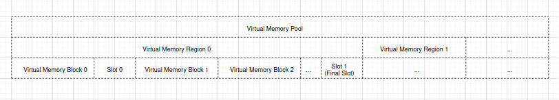
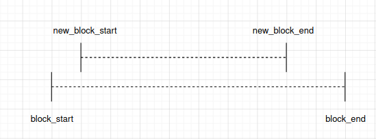
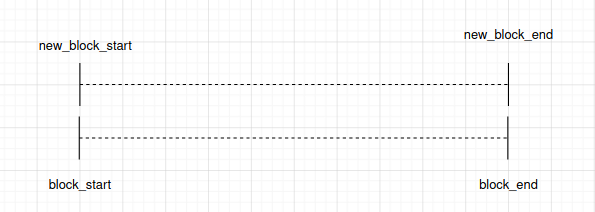
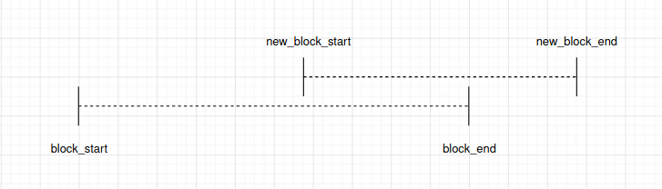
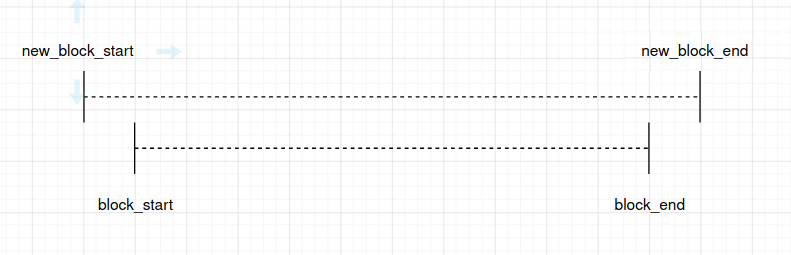

Memory Management for MMU Supported Memory
Introduction
ESP32 Memory Management Unit (MMU) is relatively simple. It can do memory address translation between physical memory addresses and virtual memory addresses. So CPU can access physical memories via virtual addresses. There are multiple types of virtual memory addresses, which have different capabilities.
ESP-IDF provides a memory mapping driver that manages the relation between these physical memory addresses and virtual memory addresses, so as to achieve some features such as reading from SPI flash via a pointer.
Memory mapping driver is actually a capabilities-based virtual memory address allocator that allows applications to make virtual memory address allocations for different purposes. In the following chapters, we call this driver esp_mmap driver.
ESP-IDF also provides a memory synchronization driver which can be used for potential memory desynchronization scenarios.
Physical Memory Types
Memory mapping driver currently supports mapping to following physical memory type(s):
SPI flash
Virtual Memory Capabilities
MMU_MEM_CAP_EXEC: This capability indicates that the virtual memory address has the execute permission. Note this permission scope is within the MMU hardware.MMU_MEM_CAP_READ: This capability indicates that the virtual memory address has the read permission. Note this permission scope is within the MMU hardware.MMU_MEM_CAP_WRITE: This capability indicates that the virtual memory address has the write permission. Note this permission scope is within the MMU hardware.MMU_MEM_CAP_32BIT: This capability indicates that the virtual memory address allows for 32 bits or multiples of 32 bits access.MMU_MEM_CAP_8BIT: This capability indicates that the virtual memory address allows for 8 bits or multiples of 8 bits access.
8 MB external memory addresses (from 0x40400000 to 0x40C00000) which have the MMU_MEM_CAP_EXEC and MMU_MEM_CAP_READ capabilities are not available for users to allocate, due to hardware limitations.
You can call esp_mmu_map_get_max_consecutive_free_block_size() to know the largest consecutive mappable block size with certain capabilities.
Memory Management Drivers
Driver Concept
Terminology
The virtual memory pool is made up with one or multiple virtual memory regions, see below figure:
{kind=link}
A virtual memory pool stands for the whole virtual address range that can be mapped to physical memory.
A virtual memory region is a range of virtual address with same attributes.
A virtual memory block is a piece of virtual address range that is dynamically mapped.
A slot is the virtual address range between two virtual memory blocks.
A physical memory block is a piece of physical address range that is to-be-mapped or already mapped to a virtual memory block.
Dynamical mapping is done by calling
esp_mmapdriver APIesp_mmu_map(). This API maps the given physical memory block to a virtual memory block which is allocated by theesp_mmapdriver.
Relation Between Memory Blocks
When mapping a physical memory block A, block A can have one of the following relations with another previously mapped physical memory block B:
Enclosed: block A is completely enclosed within block B, see figure below:
Identical: block A is completely the same as block B, see figure below:
Note that
esp_mmapdriver considers the identical scenario the same as the enclosed scenario.Overlapped: block A is overlapped with block B, see figure below:
There is a special condition, when block A entirely encloses block B, see figure below:
Note that
esp_mmapdriver considers this scenario the same as the overlapped scenario.
{kind=link}
{kind=link}
{kind=link}
{kind=link}
Driver Behaviour
Memory Map
You can call esp_mmu_map() to do a dynamical mapping. This API can allocate a certain size of virtual memory block according to the virtual memory capabilities you selected, then map this virtual memory block to the physical memory block as you requested. The esp_mmap driver supports mapping to one or more types of physical memory, so you should specify the physical memory target when mapping.
By default, physical memory blocks and virtual memory blocks are one-to-one mapped. This means, when calling esp_mmu_map():
If it is the enclosed scenario, this API will return an
ESP_ERR_INVALID_STATE. Theout_ptrwill be assigned to the start virtual memory address of the previously mapped one which encloses the to-be-mapped one.If it is the identical scenario, this API will behaves exactly the same as the enclosed scenario.
If it is the overlapped scenario, this API will by default return an
ESP_ERR_INVALID_ARG. This means,esp_mmapdriver by default does not allow mapping a physical memory address to multiple virtual memory addresses.
Specially, you can use ESP_MMU_MMAP_FLAG_PADDR_SHARED. This flag stands for one-to-multiple mapping between a physical address and multiple virtual addresses:
If it is the overlapped scenario, this API will allocate a new virtual memory block as requested, then map to the given physical memory block.
Memory Unmap
You can call esp_mmu_unmap() to unmap a previously mapped memory block. This API returns an ESP_ERR_NOT_FOUND if you are trying to unmap a virtual memory block that is not mapped to any physical memory block yet.
Memory Address Conversion
The esp_mmap driver provides two helper APIs to do the conversion between virtual memory address and physical memory address：
esp_mmu_vaddr_to_paddr()converts virtual address to physical address.esp_mmu_paddr_to_vaddr()converts physical address to virtual address.
Memory Synchronization
MMU supported physical memories can be accessed by one or multiple methods.
SPI flash can be accessed by SPI1 (ESP-IDF esp_flash driver APIs), or by pointers. ESP-IDF esp_flash driver APIs have already considered the memory synchronization, so users do not need to worry about this.
PSRAM can be accessed by pointers, hardware guarantees the data consistency when PSRAM is only accessed via pointers.
Thread Safety
Following APIs in esp_mmu_map.h are not guaranteed to be thread-safe:
APIs in esp_cache.h are guaranteed to be thread-safe.
API Reference
API Reference - ESP MMAP Driver
Header File
This header file can be included with:
#include "esp_mmu_map.h"
This header file is a part of the API provided by the
esp_mmcomponent. To declare that your component depends onesp_mm, add the following to your CMakeLists.txt:REQUIRES esp_mm
or
PRIV_REQUIRES esp_mm
Functions
-
esp_err_t esp_mmu_map(esp_paddr_t paddr_start, size_t size, mmu_target_t target, mmu_mem_caps_t caps, int flags, void **out_ptr)
Map a physical memory block to external virtual address block, with given capabilities.
- Parameters:
paddr_start -- [in] Start address of the physical memory block
size -- [in] Size to be mapped. Size will be rounded up by to the nearest multiple of MMU page size
target -- [in] Physical memory target you're going to map to, see
mmu_target_tcaps -- [in] Memory capabilities, see
mmu_mem_caps_tflags -- [in] Mmap flags
out_ptr -- [out] Start address of the mapped virtual memory
- Returns:
ESP_OK
ESP_ERR_INVALID_ARG: Invalid argument, see printed logs
ESP_ERR_NOT_SUPPORTED: Only on ESP32, PSRAM is not a supported physical memory target
ESP_ERR_NOT_FOUND: No enough size free block to use
ESP_ERR_NO_MEM: Out of memory, this API will allocate some heap memory for internal usage
ESP_ERR_INVALID_STATE: Paddr is mapped already, this API will return corresponding
vaddr_start + new_block_offsetas per the previously mapped block. Only to-be-mapped paddr block is totally enclosed by a previously mapped block will lead to this error. (Identical scenario will behave similarly) new_block_start new_block_end |----- New Block -----| |------------ Block ------------| block_start block_end
-
esp_err_t esp_mmu_unmap(void *ptr)
Unmap a previously mapped virtual memory block.
- Parameters:
ptr -- [in] Start address of the virtual memory
- Returns:
ESP_OK
ESP_ERR_INVALID_ARG: Null pointer
ESP_ERR_NOT_FOUND: Vaddr is not in external memory, or it's not mapped yet
-
esp_err_t esp_mmu_map_get_max_consecutive_free_block_size(mmu_mem_caps_t caps, mmu_target_t target, size_t *out_len)
Get largest consecutive free external virtual memory block size, with given capabilities and given physical target.
- Parameters:
caps -- [in] Bitwise OR of MMU_MEM_CAP_* flags indicating the memory block
target -- [in] Physical memory target you're going to map to, see
mmu_target_t.out_len -- [out] Largest free block length, in bytes.
- Returns:
ESP_OK
ESP_ERR_INVALID_ARG: Invalid arguments, could be null pointer
-
esp_err_t esp_mmu_map_dump_mapped_blocks(FILE *stream)
Dump all the previously mapped blocks
Note
This API shall not be called from an ISR.
Note
This API does not guarantee thread safety
- Parameters:
stream -- stream to print information to; use stdout or stderr to print to the console; use fmemopen/open_memstream to print to a string buffer.
- Returns:
ESP_OK
-
esp_err_t esp_mmu_vaddr_to_paddr(void *vaddr, esp_paddr_t *out_paddr, mmu_target_t *out_target)
Convert virtual address to physical address.
- Parameters:
vaddr -- [in] Virtual address
out_paddr -- [out] Physical address
out_target -- [out] Physical memory target, see
mmu_target_t
- Returns:
ESP_OK
ESP_ERR_INVALID_ARG: Null pointer, or vaddr is not within external memory
ESP_ERR_NOT_FOUND: Vaddr is not mapped yet
-
esp_err_t esp_mmu_paddr_to_vaddr(esp_paddr_t paddr, mmu_target_t target, mmu_vaddr_t type, void **out_vaddr)
Convert physical address to virtual address.
- Parameters:
paddr -- [in] Physical address
target -- [in] Physical memory target, see
mmu_target_ttype -- [in] Virtual address type, could be either instruction or data
out_vaddr -- [out] Virtual address
- Returns:
ESP_OK
ESP_ERR_INVALID_ARG: Null pointer
ESP_ERR_NOT_FOUND: Paddr is not mapped yet
-
esp_err_t esp_mmu_paddr_find_caps(const esp_paddr_t paddr, mmu_mem_caps_t *out_caps)
If the physical address is mapped, this API will provide the capabilities of the virtual address where the physical address is mapped to.
Note
: Only return value is ESP_OK(which means physically address is successfully mapped), then caps you get make sense.
Note
This API only check one page (see CONFIG_MMU_PAGE_SIZE), starting from the
paddr- Parameters:
paddr -- [in] Physical address
out_caps -- [out] Bitwise OR of MMU_MEM_CAP_* flags indicating the capabilities of a virtual address where the physical address is mapped to.
- Returns:
ESP_OK: Physical address successfully mapped.
ESP_ERR_INVALID_ARG: Null pointer
ESP_ERR_NOT_FOUND: Physical address is not mapped successfully.
Macros
-
ESP_MMU_MMAP_FLAG_PADDR_SHARED
Share this mapping.
MMU Memory Mapping Driver APIs for MMU supported memory
Driver Backgrounds:
Type Definitions
-
typedef uint32_t esp_paddr_t
Physical memory type.